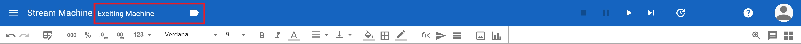

Stream Machine¶
- Stream Machines contain one or up to four Streamsheets.
- Stream Machines run on servers. Hence, once you start them, they keep running until they are being stopped or the server is shut down, even if you turn off the client. That means you can turn off the device you are using to access the Streamsheet platform, e.g. your computer, and the Stream Machines keep running.
- Stream Machines have a cycle time. This serves as its general calculation speed and could be seen as its internal clock.
- Each Stream Machine is a microservice.
{kind=link}
Name & Label¶
To better organise all of your Stream Machines you should think about a comprehansible name names (it can be more descriptive as in the example 😉 ) and add fitting labels to group them. 
{kind=link}
Machine Control¶
{kind=link}
With these 4 buttons a machine´s state is controlled. A machine can either be started, paused, stopped or calculated step-by-step.
- Stop: This button stops the Stream Machine and sets its calculation-step-count to 0. Additionally, the step-counts and the inbox queues of its Streamsheets are reset.
- Pause: This pauses the Stream Machine. Step-counts are not reset. However, the biggest difference to “stop” is that messages are queued in the inboxes of Streamsheets.
- Play: This button starts a machine if it is paused or stopped. Message streams are only processed or produced if a machine is set to “play”.
- Execute 1 step: Clicking this button triggers one machine calculation step.
Cycle Time¶
When a machine is started, it recalculates continuously at the speed of its cycle time.
{kind=link}
Depending on how fast a machine is running, not every recalculation-step can be visualized in your browser. Thus, the system automatically balances itself by visualizing only every Xth step. In addition, this update interval can also be set to a higher value manually. In any case, this affects only the visualization in the browser as the Stream Machine will always run with the defined cycle time on the server.
{kind=link}
In the screenshot the cycle time is set to 1000 ms. Thus, the machine performs one recalculation aka one machine-step per second. The Update Interval is set to 10. Consequently, the visualization of the machine and its Streamsheets is updated in your browser only every 10th step that is to say in this case every 10 seconds. The gauges show how many steps are calculated on the server and how many are visualized on the client (your browser).
Tip
The Calculation Setting “On Message” in the Stream Sheet Settings ignores the cycle time and calculates on every incoming message.
Tool bar¶

- Insert Producer Function: This tool opens a wizard containing all functions you can use to save and send data, essentially to produce a data stream. Most of the functions serve the purpose of creating an outgoing data stream. However, some, such as REST.REQUEST or MONGO.QUERY, can also be used to bring data into the Streamsheet. Simply choose a producer function and complete the arguments. The default option is called MQTT.PUBLISH. This is also the most common formula to send data from one Stream Machine to another.
- Insert Drawing Shape: This tool offers you a variety of shapes to use in your Streamsheets. Insert a shape and have a look at the formula bar. You will see that every shape is created by a DRAW formula. Link the position parameters to cells and the shape starts moving.
- Insert Chart: Similarly to other Spreadsheet solutions, charts can be created by selecting a cell range and choosing a chart type. However, as Streamsheets are recalculated automatically, charts change dynamically according to their input.